Religion based on Jesus Christ’s life and teaching
Christian association with Judaism
Jesus of Nazareth
Shared beliefs
Distinguishing features
Jesus as Messiah (Hebrew)/Christ (Greek), i.e. The Anointed One
Christian liberty
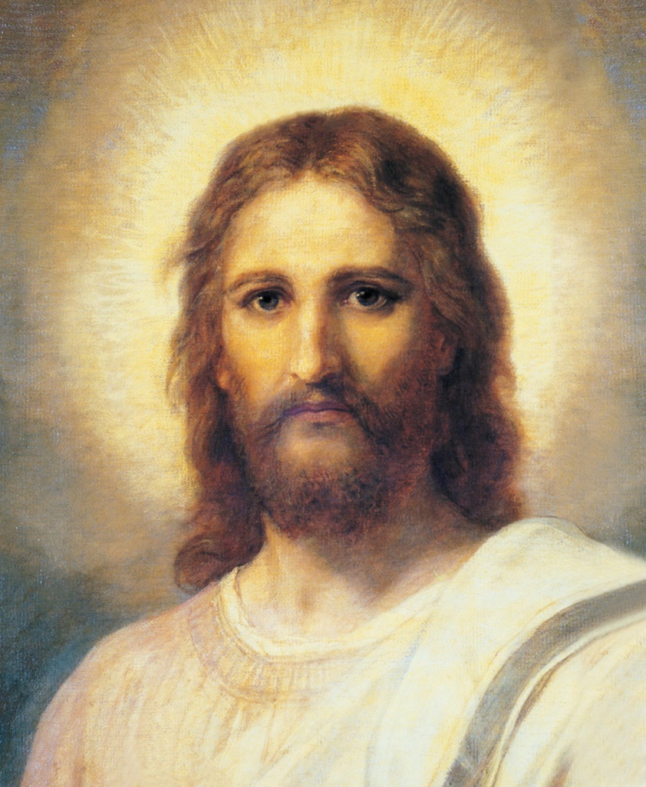
The Christian Present as Shaped by Its Past
The Life, Death, and Resurrection of Jesus Christ
(ca. 4 B.C. – 30 A.D.)
The Life, Death, and Resurrection of Jesus Christ (ca. 4 BC – 30 AD)
Primary sources of knowledge of Jesus are the four Gospels
Matthew, Mark, Luke, and John
Historians place Jesus’s birth around 4 B.C.E. and his death around the years 29 to 30
Beginning of Jesus‘spublic ministry is marked by his baptism
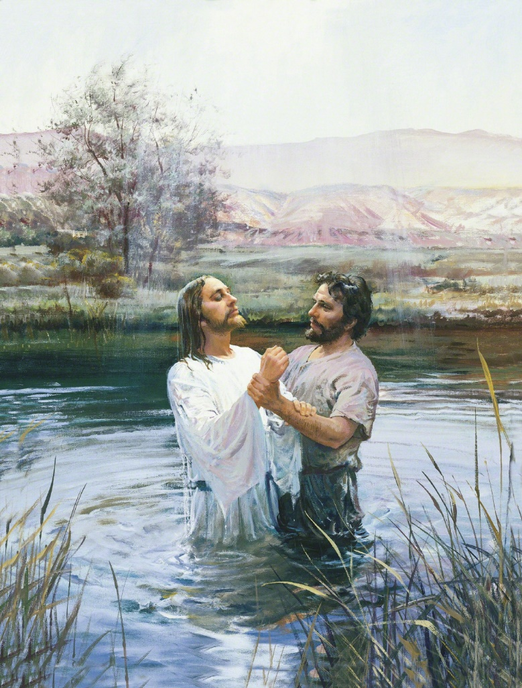
The Life, Death, and Resurrection of Jesus Christ
Gathered twelve disciples who were called apostles by the church
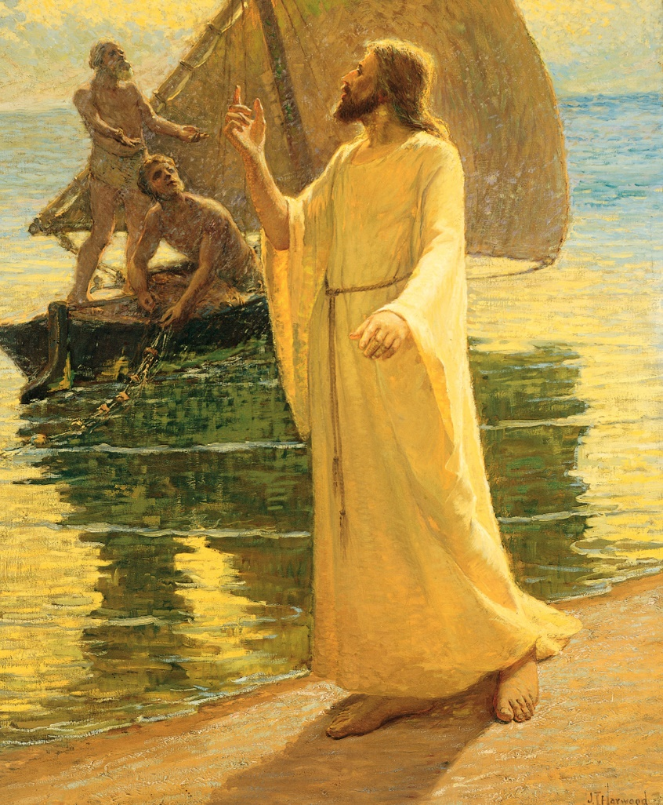
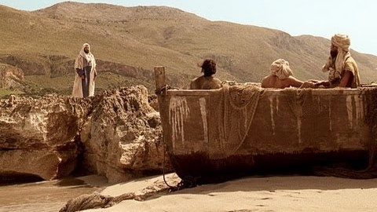
The Life, Death, and Resurrection of Jesus Christ
Jesus traveled throughout Judea teaching and performing miracles
Sermon on the Mount
Beatitudes (comes from the Latin word beatus, meaning "blessed" or "happy.“)
“Blessed Are..”
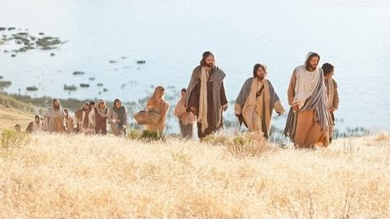
The Life, Death, and Resurrection of Jesus Christ
Sermon on the Mount
Beatitudes (comes from the Latin word beatus, meaning "blessed" or "happy.“)
“Blessed Are..”
Matt 5: 3-12 – their character and privileges
Matt 5: 13-16 their responsibilities
Significance
Counter-Cultural Values
Kingdom Ethics
Blueprint for Christian Living
The Life, Death, and Resurrection of Jesus Christ
Sermon on the Mount
Beatitudes – “Blessed Are..”
Matthew’s Antitheses: The Higher Law
“Ye have heard of old . . . But I say”
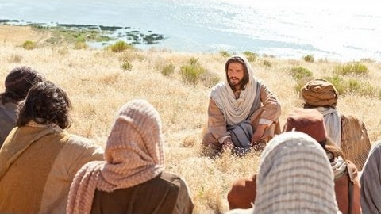
The Life, Death, and Resurrection of Jesus Christ
Sermon on the Mount
Beatitudes – Transformation of the Believer
Matthew ‘s Antitheses: The Higher Law – Transformation of the Law
fulfilment of the law in regard to
Significance
Fulfillment of the Law (Matt 5:17)
Inner Transformation (Outward action to inward motivations)
Call to higher moral and spiritual standard
Parables
Often taught in Parables
“without a parable spake he not unto them” (Mark 4:34)
Greek origin, meaning setting side by side, a comparison
Narrative, metaphor, brevity
Parables demand interpretation
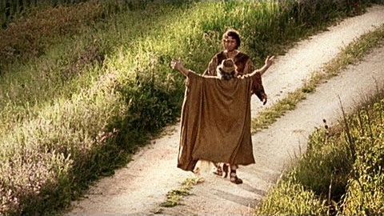
The Life, Death, and Resurrection of Jesus Christ
Primary message centered on Love
Matt 22: 36-40
Love God (Deut 6:5)
Love Others (Lev. 19:18)
Radically New
Matt 5: 39 – Turn the other cheek
Matt 5: 44 – Love your enemies
A New Commandment I Give Unto You
The Life, Death, and Resurrection of Jesus Christ
Jesus’s entry into Jerusalem at Passover time was the prelude to a final crisis
After a last supper with his disciples, he was betrayed by Judas Iscariot and was arrested
Known as the Passion (suffering)
What follows is a series of videos depicting this time period
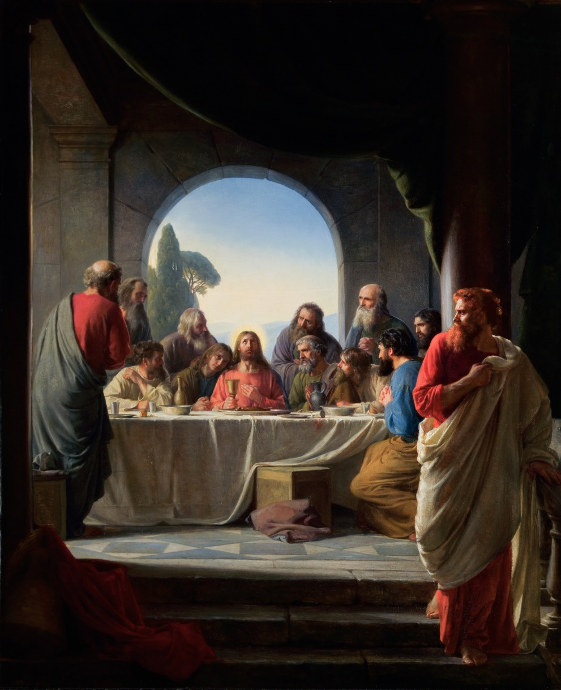
The Last Supper John 13: 1-35
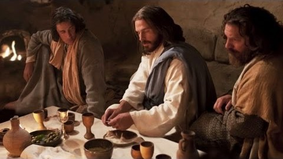
Jesus is Condemned Before Pilate Matt 27: 1-2, 11-25
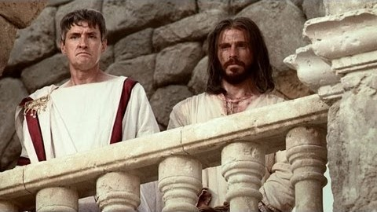
Jesus Is Scourged and Crucified Matt 27: 26-50
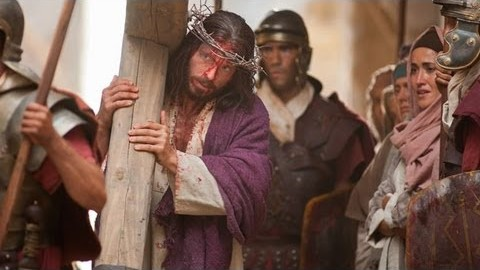
Jesus is Laid in a Tomb Matt 27: 57-60
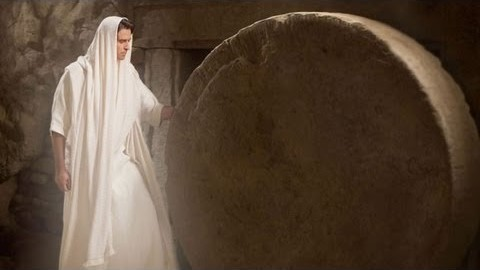
Jesus is Resurrected John 20: 3-18
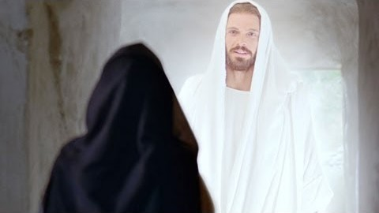
Christology
The Branch of Christian theology relating to the person, nature, and role of Jesus Christ
Divine and Human Nature
Hypostatic Union – Jesus is both fully divine and fully human
Incarnation - God became human in the person of Jesus Christ
Titles of Christ
Christ (G.) / Messiah (H)
King of Jews
Spiritual King
Royal Lineage
Savior
Spiritual savior (not the political savior Jews at the time were looking for)
he shall save his people from their sins (Matt. 1:21)
Sin: willful disobedience of God’s commandments
Sin cuts one off from the presence of God
Savior is needed to Justify man to God
Justify: to pardon and clear from guilt; to absolve from guilt and merited punishment
Titles of Christ
Christ (G.) / Messiah (H)
King of Jews
Spiritual King
Royal Lineage
Savior
Spiritual savior (not the political savior Jews at the time were looking for)
Savior of All
Transforms Jewish teachings from ethnic religion to universal religion
Titles of Christ
Son of God
Central to Christianity is the divine sonship of Christ
"The angel said to her, 'The Holy Spirit will come upon you, and the power of the Most High will overshadow you. Therefore the child to be born will be holy;; he will be call Son of God.” (Luke 1: 35 NRSVUE)
Titles of Christ
I AM
Christ proclaims He is the God of Abraham, Isaac, and Jacob
Jesus said unto them, Verily, verily, I say unto you, Before Abraham was, I am.
Work of Jesus - Soteriology
Jesus declares himself the looked for Messiah (Luke 4:18-21 & Mark 14:61-62)
Soteriology: branch of theology dealing with salvation especially as effected by Jesus Christ
Work of Jesus - Soteriology
Atonement – the reconciliation of God and humankind through Jesus Christ
Passion – (based on latinpassio suffering) the suffering and death of Jesus
Gethsemane (Luke 22:44)
Crucifixion
Resurrection
Christus Victor
Jesus’ death and resurrection triumphed over sin, death, and the devil.
Work of Jesus - Soteriology
Christianity transformed from small “Jesus cult” within Judaism to Universal Religion
Apostles now commanded to teach Gentiles (Matt 28:19, compare Matt 10:5-6)
Atonement applies to all who believe, repent, and are baptized
Earliest Church
33 Ad to 90 AD
Spotlight On:
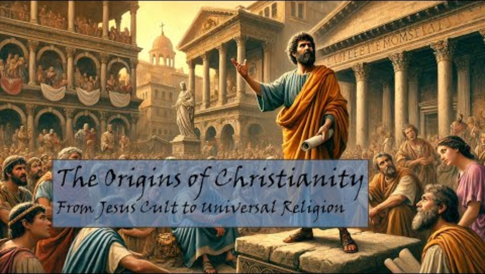
Ancient Period
100 – 500 AD
Growth of Church
As the apostles died, local churches developed lasting structures of leadership
Christianity had established itself in every large and midsize city in the eastern Roman Empire
Established local leadership – Episkopos (overseer or bishop) and presbyter (elder)
Did not have authority to speak for whole church or declare doctrine
Growth of Christianity challenged Roman empire
Led to increased persecutions and martyrdom of Christians
But failed to wipe out movement
Constantine and the Christianization of the Roman Empire
306 – 337 Constantine reigns as Emperor of Rome
312 Constantine’s Dream – “In this sign, you will conquer”
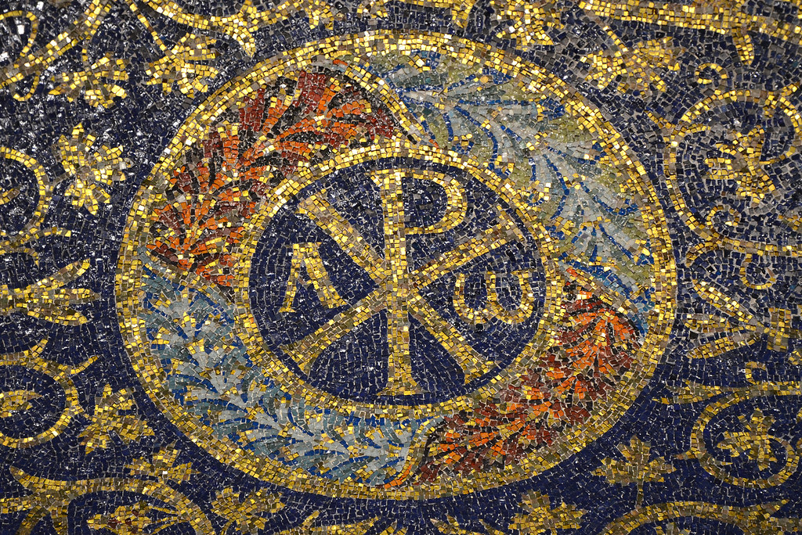
Constantine and the Christianization of the Roman Empire
313 Edict of Milan – Legal toleration and restoration of Christian property
380 Theodosius I makes Nicene Christianity the empire’s official religion
If Christianity was going to be used to justify power, he needed Church to speak with one voice
“One God, one Church, and one Emperor”
Creation of orthodoxy: “correct teaching”
Orthodoxy Creation
325 - Convened first ecumenical council in Nicaea (Council of Nicaea)
So named because it was to unify the worldwide church
Proclaims the Nicene Creed (revised in 381)
Through means of the Creed is Orthodoxy proclaimed
Creeds respond to alternative theories, which can now be labeled heresy (or heterodox) and punishable by execution!
With establishment of Christianity as Roman State Religion, heresy can be viewed as a crime against the state
Note – heresy is applied anachronistically to theological theories put forth during this time; not at all clear which theories would rise as orthodoxy
Some theories are still accepted by different branches of Christianity
Orthodoxy Creation
Even after Nicene Creed, important theories continue to arise
Additional councils were held to debate these theories; creedal language established as direct reaction to theories
Multiple councils needed to establish orthodoxy
Theories that lost the debate are labeled heresy
Most heresies were alternative theories of Christology
Christian Heresy
Arianism – Arius taught that because Jesus is “begotten” thus cannot be God in the same sense that God is God
Denies full divinity of Jesus Christ
Claimed that Jesus and God were of like substance not the same substance
Enjoyed a brief period of ascendancy before it was denounced as heresy
Christian Heresy
Arianism
Monophysite / Miaphysite controversy – How are Christ’s full divinity and full humanity united in one incarnate nature?
Christian Heresy
Arianism
Monophysitism
Docetism – Jesus Christ, as fully divine, did not have a real or natural body during his life on earth but only an apparent one
Associated with Gnosticism which held that matter was evil and the spirit good and claimed that salvation was attained only through esoteric knowledge (or gnosis)
Christian Heresy
Arianism
Monophysitism
Docetism
Monarchianism – Strongly maintained the essential unity of deity
Adoptionist - Christ, although of miraculous birth, was mere man until adopted by God
Patripassionist (Father suffers) – Holds that God the Father had come to earth and suffered and died under the appearance of the Son. Trinity is three manifestations of the single divine being
Nicene Creed
Read Creed; identify phrases that are in direct reaction to the above discussed “heresies”
Nicene Creed
Read Creed; identify phrases that are in direct reaction to the above discussed “heresies”
“begotten, not made, of one being with the father”
is in reaction to Arianism.
“was incarnate of the Holy Spirit and the Virgin Mary, and became truly human.”
is in reaction to Docetism.
St Augustine (354-430)
Most influential Church Father – His thought molded the medieval church and continues to be influential to this day
Formed most of his thought in reaction to “heresies” of the day
Works of St. Augustine
Confessions
City of God – written in reaction to sack of Rome
Augustinian Thought
Original Sin
Divine Grace
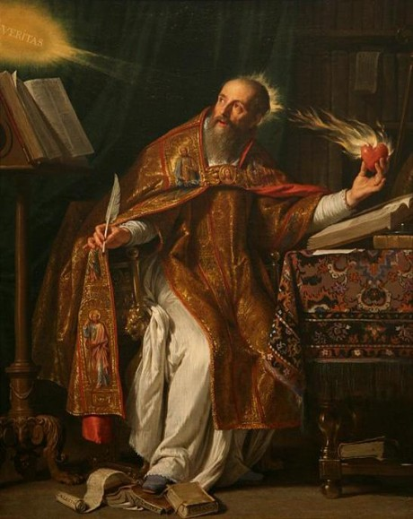
Monasticism
St. Benedict (480 – 547) father of Western Monasticism
Gained fame as a holy man living in a cavern
Started a monastery for his followers
Rules for Monks – provided detailed instructions for how monks were to live
Gregorian Chant
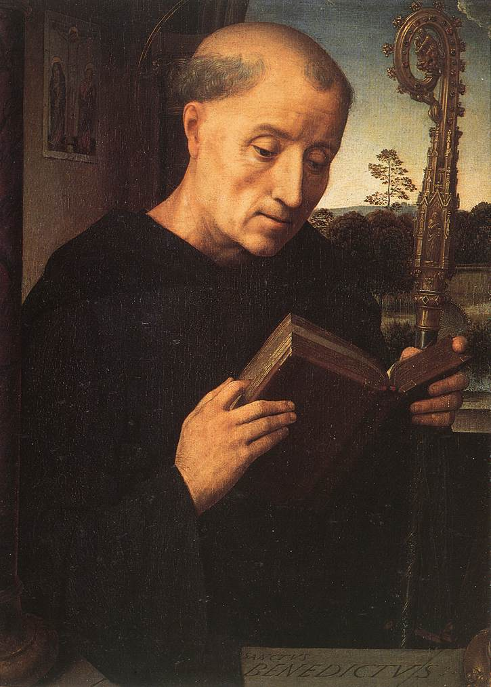
Gregorian Chant
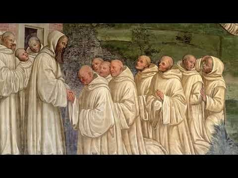
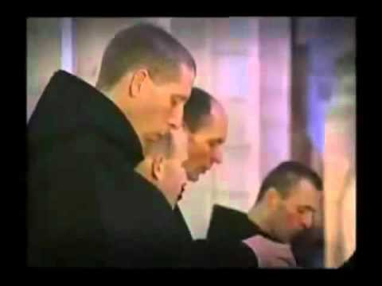
Byzantine, Medieval, and Renaissance Christianity
500 – 1500 ad
Eastern Orthodox
Constantine Moves Capital East – names new capital Constantinople
Sets up seeds of division of Empire and Church
Western (or Latin) part of Empire will only last another 100 years
Eastern (or Byzantine) lasted for more than a 1,000 years
Bishop of Constantinople now assumes Primus inter Pares
Churches of each empire develop independently
Western church influenced by Latin language and culture
Eastern church influenced by Greek
Iconoclasm Controversy
Held on to the fiction of one universal church, at least until the Pope and the Patriarch excommunicated each other!
Papacy assumed supremacy as the successor to Peter; Patriarch assumed supremacy as the Bishop of the Imperial Capital
Iconoclasm – Emperor Leo III commands the destruction of all images of Jesus, Mary, and the Angels (in reaction to Muslim criticism of Christianity)
Action condemned by Pope and western church
Eastern church convenes council which condemns use of icons as idolatry
2nd Council of Nicaea affirms use of icons
Filioque Controversy
Eastern Bishops rejected the filioque (“and by the son”) inserted into the Creeds
Schism of 1054 – the Pope and the Patriarch mutually excommunicate each other
Schism between Eastern Orthodox and Roman Catholic is complete
Reformation in the Western Church
1500 – 1600 AD
Corruption in the Western Church
By 16th century, Church becomes wealthy, powerful, and corrupt!
Connection to Feudal Monarchies
Land ownership, tithes, corvee labor
Papal states
The Bad Popes
Land rich; cash poor
1517 Pope Leo X offered indulgences for those who gave alms to rebuild St Peter’s Basilica in Rome
Indulgence: remission of part or all of the temporal and especially purgatorial punishment that is due for sins
Reform prior to Luther
John Wycliffe (1330 – 1384)
English theologian
Promoted first complete translation of the Bible into English
Argued church should give up its possessions and return to evangelical poverty
Attacked doctrine such as transubstanitation
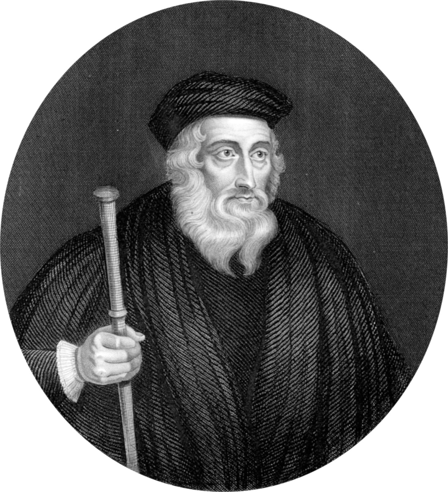
Martin Luther
Born to a wealthy family in Germany
Educated at most distinguished university in Germany
Following a terrifying experience in a thunderstorm, he abandoned the study of law and joined a monastery
Earned Doctor of Theology in 1512
Became professor of biblical studies
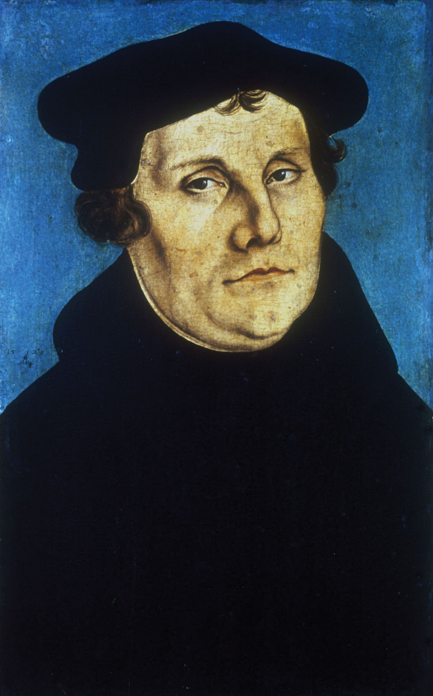
The Indulgences Controversy
Luther objected to teachings that purchase of indulgences granted forgiveness of sins
Drafted of set of propositions for the purpose of opening academic debate on indulgences;
Nailed his 95 Thesis to the door of Wittenberg Castle Church on October 31, 1517
Attacks not only the corruption, but the underlying doctrine as well
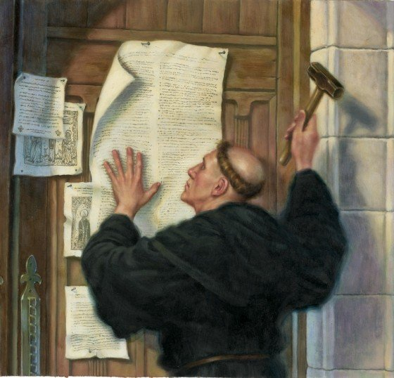
A New Theology
Luther develops a new understanding of Salvation, or reconciliation with God
Traditional view is salvation is a joint effort of human’s good works and God’s grace
Luther argues that human’s contribute nothing to their own salvation:
Sola gratia: Salvation is, fully and completely, a work of divine grace
Sola fide: God’s pardon for guilty sinners is granted to and received through faith alone, excluding all works
Luther claims authority through an appeal to scripture alone (Sola scriptura)
A New Theology
Catholic doctrine is that sacraments are a “means of grace” and only an ordained priest can administer the sacraments
Luther’s Sola gratia/Sola Fide is a direct attack on the magisterium*
*the teaching authority of the Roman Catholic Church, especially as exercised by bishops or the Pope.
All baptized Christians share a “universal priesthood”; ordained ministry remains, but is not a separate spiritual class
Sacraments limited to the two found in Bible: Baptism and Eucharist
Lutheran Church
Luther excommunicated in 1521
Moved to create an alternative church that he named the Evangelical Church
Luther and his movement were promoted by rulers of several German states
Translated Bible into German – still used today
Gave community singing a renewed role
Composed hymns and a hymn book
Example: A Mighty Fortress is Our God
Floodgates open
Multiple reformers followed Luther
John Calvin
Huldrych Zwingli
Gives rise to multiple denominations
Calvinism
Anglican (Church of England)
Anabaptists
“33,000 denominations” is a disputed classification—not a count of Protestant denominations
Catholic Counter-Reformation
Efforts by Catholic Church against the Protestant Reformation and toward internal renewal
Pope Paul III convenes Council of Trent in 1545
Issues formal Catholic reply to doctrinal challenges of the Protestant Reformation
Key Doctrinal Clarifications
Liturgy and Sacraments – doctrine of transubstantiation affirmed
Church Discipline and Reform
Index of Forbidden Books
New Religious Orders were founded, significantly the Jesuits
Society of Jesus, Jesuits
Founded in 1534 by St. Ignatius of Loyola
Jesuits swore loyalty to the Pope and dedicated to reconstructing church life and teaching
Known as “Shock troops of the Counter-Reformation”
Jesuits were highly educated and became active in scholarship and education
Active in missionary efforts throughout the world, esp South America and Asia
St Francis Xavier in Asia
St. Francis Xavier baptizing Infidels
Roman Inquisition
Establishment: Founded in 1542 by Pope Paul III, responding to the spread of Protestantism and heretical ideas.
Purpose: To maintain Catholic orthodoxy and counteract the Protestant Reformation. Aimed to uphold Church doctrine and combat heresy within Papal territories.
Structure: Operated under the authority of the Holy Office, led by a group of cardinals and officials appointed by the Pope.
Methodology: Focused on identifying, trying, and sentencing individuals accused of heresy. Used interrogation and sometimes torture for extracting confessions.
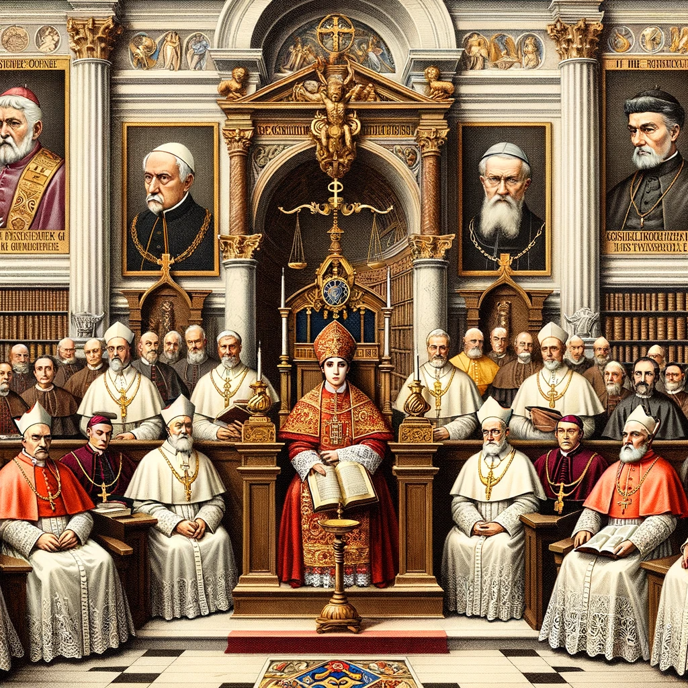
Roman Inquisition
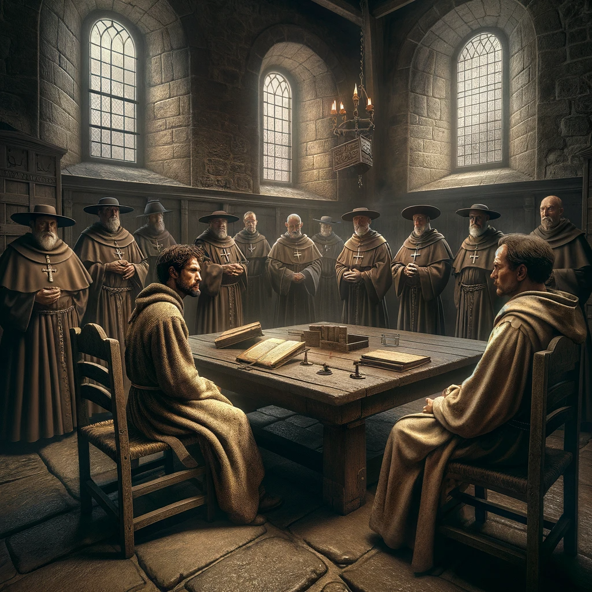
Key Activities:
Censorship of books and literature, including maintaining the Index of Forbidden Books.
Prosecution of notable figures, such as Giordano Bruno and Galileo Galilei, for teachings contrary to Church doctrine.
Oversight of religious conformity within Catholic territories, ensuring adherence to orthodox practices.
Impact: Influenced cultural and intellectual life in Europe, enforcing religious conformity but also contributing to censorship and suppression of scientific and philosophical advancements.
Legacy: Part of the broader Counter-Reformation effort, its actions and consequences remain subjects of historical and ethical debate.
Modern Christianity
1900-Present
Fundamentalism
Arose out of 19th century millennialism to oppose liberalization of church doctrine
Emphasized as fundamental
the literal truth of the Bible,
the imminent physical Second Coming of Jesus,
the Virgin Birth,
resurrection, and atonement
Displeasure over teaching of evolution in schools gave movement momentum in 1920s
Fundamentalist Bible institutes and colleges created; Fundamentalists made use of TV as a medium for preaching
Ecumenism
Movement for greater understanding and cooperation among churches
Changed how:
Theologians conceptualize the faith
Different Christian churches relate to each other
Grassroots Christians live out their faith in worship and daily life
After WWII the World Council of Churches (WCC) was established
Since Vatican II Roman Catholic strong interest in improving interchurch relations; Pope and Patriarch lifted excommunications
Second Vatican Council (1962-1965)
21st ecumenical council
Symbolizes Roman Catholic readiness to acknowledge circumstances of modern world
Allowed for
Greater involvement of lay people in the Church
More open attitude of scholarly study of the Bible
Use of the vernacular during mass in place of Latin
Common Teachings
Niceno-Constantinopolitan Creed
Most influential of all Christian Statements of belief
accepted as authoritative by the Roman Catholic, Eastern Orthodox, Anglican, and major Protestant churches.
Doctrine of Trinity begins to be formulated – God the Father and Jesus Christ are “Consubstantial” (of same substance)
Fully developed in the Athanasian Creed
Doctrine of the Trinity
Neither the word “Trinity” nor the explicit doctrine appears in the New Testament
Earliest Christians believed that God the Father and Jesus Christ are separate beings, examples Arius, Adoptionism, etc
Followed from need to maintain Hebrew Monotheism
Jesus subordinate to the Father
Doctrine formulated during the 4th – 5th centuries and codified in the Creeds:
Maintain monotheism by stating three persons of same substance
Attempt to distinguish from and purge Christianity of Pagen elements
The Holy Trinity
God the Father
All powerful in heaven and on earth
There is nothing outside his power
A living being, not a force or a cosmic principle
God the Son
Created heaven and earth
Jesus is the crucified and exalted Lord, and the Son of God
Interpretations of Jesus - Gospels of Matthew, Mark, Luke, and John
The Holy Trinity
God the Holy Spirit
Called Lord, the term is also used for the Father and the Son
Foundational view of the Holy Spirit is sketched in a section of the Nicene creed
We believe in the Holy Spirit, the Lord, the giver of Life, who proceeds from the Father and the Son. With the Father and the Son he is worshiped and glorified. He has spoken through the prophets.
Powerful, uncontrollable, and unpredictable
Ethical Foundations
Ethical Foundations
Pauline Epistles
Draw on the Ten Commandments to shape the moral life of Christians
Stress moral virtues of the Christian life
Trust in God, hope in the future God will bring, peace in one’s heart and in the church, and love for all people
Grounds the ethical life of the Christian in the life, death, and resurrection of Jesus
Christian Worship and Ritual
The first believers worshiped in the Jerusalem temple and synagogues
The Roman Catholic Church built itself around seven sacraments
Eastern Orthodox Church made the worship in its various branches unified
In Protestant Reformation, Catholic Reform, and Vatican II, worship was reformed to be more the work of the people
Christian Worship and Ritual
Worship became more elaborate after Christianity was permitted and then became official in the 300s
Formal church buildings were erected, and church officials dressed for worship in dress modeled after Roman government garb
Liturgical calendar was developed
Church buildings were designed for the community
Earlier intimacy of house churches was lost
Other Worship Practices
Cult of the Saints: Veneration of saints in shrines, churches, and other places
Different forms of Eucharistic liturgy existed in various areas
Protestant churches
Emphasis on preaching the Bible
Reducing the sacraments to the two that had been founded by Jesus: baptism and Holy Communion
Putting all services into the language of the people
Other Worship Practices
Charismatic movement: Stressed the use of supernatural gifts of the Holy Spirit
Charismatic - Groups inside Roman Catholic, Orthodox, and mainline Protestant churches
Pentecostal - Protestant churches where these practices are the norm
Coverage Addition · Jesus and His Message
The Kingdom of God
The organizing theme of Jesus's preaching
God's Rule
Not simply a place: God's active reign over human life and creation.
Already Present
Healings, forgiveness, restored community, and changed lives signal its arrival.
Not Yet Complete
Jesus also points toward a future fulfillment of justice, peace, and renewal.
Christian hope lives in the tension between what God has begun and what has not yet been completed.
Coverage Addition · Jesus and His Message
Jesus at the Margins
The kingdom overturns ordinary boundaries of honor and belonging
Outcasts
Lepers, the poor, and people labeled "sinners"
Social Outsiders
Tax collectors, prostitutes, and Samaritans
Women
Women appear as disciples, patrons, witnesses, and conversation partners
Enemies
Love of enemy replaces retaliation and rejects revolutionary violence
Table fellowship becomes a visible sign that God's mercy crosses boundaries.
Coverage Addition · Origins of the Church
Pentecost and the Earliest Church
Acts presents the Holy Spirit as empowering a new community
Pentecost
During the Jewish festival of Shavuot, disciples experience wind, fire, and inspired speech.
Proclamation
Peter announces Jesus's resurrection and calls listeners to repentance and baptism.
Community
Believers gather for teaching, prayer, shared meals, mutual aid, and "breaking bread."
Pentecost is often called the "birthday of the Church," although Jesus's followers still understood themselves as Jews.
Coverage Addition · Origins of the Church
Paul and the Gentile Mission
A Jewish follower of Jesus helps transform a local movement into a trans-Mediterranean religion
Conversion and calling: Paul changes from persecutor to missionary after an experience of the risen Christ.
Gentile inclusion: Non-Jews may join without circumcision or full observance of Jewish identity markers.
Justification by faith: Salvation is God's gift, received through trust rather than earned status.
Networks of churches: Paul's journeys and letters connect house congregations across the Roman world.
Paul did not think he was abandoning Israel's God; he believed Israel's promises were opening to the nations.
Coverage Addition · Origins of the Church
From Jewish Movement to Distinct Church
The separation was gradual, uneven, and contested
Jesus Movement
Jewish disciples debate the meaning of Jesus within Jewish life.
→
Growing Divergence
Gentile membership, Torah practice, and claims about Jesus reshape identity.
→
Distinct Communities
After 70 CE, churches and emerging rabbinic Judaism increasingly develop apart.
Later Christian anti-Judaism turned family arguments into harmful stereotypes and persecution; Christianity's Jewish roots must remain visible.
Coverage Addition · Sacred Writings
The New Testament
Twenty-seven writings from the first generations of the Christian movement
4 Gospels
Matthew, Mark, Luke, and John interpret the life, death, and resurrection of Jesus.
Acts
A narrative of the Spirit-guided expansion from Jerusalem toward Rome.
21 Letters
Pauline and general epistles address belief, worship, ethics, and community conflict.
The canon emerged gradually as communities tested texts by apostolic connection, widespread use, and consistency with accepted faith.
Coverage Addition · Sacred Writings
Who Interprets Scripture?
Christians share a Bible but differ over the location of interpretive authority
Catholic
Scripture and apostolic Tradition are interpreted within the Church's teaching office.
Orthodox
Scripture is read within Holy Tradition, especially councils, liturgy, and the Church Fathers.
Protestant
Sola scriptura makes Scripture the final norm, while traditions still guide interpretation.
No reading is context-free: translation, worship, community, and prior assumptions shape interpretation.
Coverage Addition · Historical Bridge
After the Reformation: 1600-1800
Confessional conflict gives way to new forms of devotion, reason, and toleration
1600s
Catholic and Protestant states enforce confessional identities; religious wars expose the cost of coercion.
Late 1600s
Pietism stresses conversion, Bible study, disciplined devotion, and practical service.
1700s
The Enlightenment tests inherited authority through reason, evidence, and criticism.
1700s
Religious toleration and church-state separation gain support in parts of Europe and North America.
Coverage Addition · Historical Bridge
Christianity Confronts Modernity
The nineteenth century produced both adaptation and resistance
Historical criticism: Scholars analyze biblical texts through language, sources, authorship, and historical setting.
Science: Geology and evolutionary theory challenge some traditional readings of creation.
Reform: Christians organize movements concerning slavery, poverty, education, labor, and temperance.
Global missions: Christianity expands worldwide, often entangled with European and American imperial power.
Modern Christianity is shaped by arguments over what may change and what must remain authoritative.
Coverage Addition · Ethics
Christian Ethics: From Neighbor to Society
Following Jesus involves both personal character and public responsibility
Character
Faith, hope, love, humility, forgiveness, and reconciliation
Neighbor
The Good Samaritan expands moral concern beyond familiar boundaries
Society
Churches address poverty, labor, war, racism, human rights, and care for creation
Liberation
Black, feminist, Latin American, and other theologies begin from experiences of oppression
Shared scriptures do not automatically produce one political program; Christians debate how love and justice apply.
Coverage Addition · Worship and Ritual
Baptism and Eucharist
The two practices recognized across nearly all Christian traditions
Baptism
Initiation into Christian life
Water signifies cleansing, death and rebirth, and incorporation into the Church
Infant or believer's baptism; immersion or pouring
Eucharist / Communion
Remembers Jesus's Last Supper
Bread and wine proclaim participation in Christ
Understood as sacrifice, real presence, spiritual presence, or memorial
Common ritual forms express Christian unity, while their interpretation reveals major denominational differences.
Coverage Addition · Worship and Ritual
The Seven Sacraments
Catholic organization of ritual life from initiation through vocation and healing
Initiation
Baptism
Confirmation
Eucharist
Healing
Reconciliation
Anointing of the Sick
Service and Vocation
Marriage
Holy Orders
Orthodox Christianity also celebrates these sacred mysteries; most Protestants recognize baptism and Communion as the rites directly instituted by Jesus.
Coverage Addition · Worship and Ritual
The Christian Liturgical Year
Worship organizes time around the story of Christ
AdventExpectation and preparation
ChristmasIncarnation and birth of Jesus
EpiphanyChrist revealed to the nations
Lent and Holy WeekRepentance, Passion, and crucifixion
EasterResurrection and new life
Pentecost and Ordinary TimeSpirit, Church, discipleship, and mission
The calendar teaches doctrine through repeated practices, colors, readings, fasting, and feasting.
Coverage Addition · Worship and Belief
Death, Resurrection, and Christian Hope
Christian hope centers on resurrection and renewed creation, not only an immortal soul
Resurrection
God raises the dead; embodied life is transformed rather than merely discarded.
Judgment and Afterlife
Traditions teach heaven and hell differently; Catholic teaching also includes purgatory.
Funeral Practice
Prayer, Scripture, remembrance, burial or cremation, and hope in Christ's victory over death.
Christian traditions agree on resurrection in the creeds while differing over the sequence, imagery, and details of the afterlife.
Coverage Addition · Doctrine
Mary and the Logic of the Incarnation
Debates about Mary were also debates about who Jesus is
Ephesus · 431
Theotokos, "God-bearer," protects the claim that the one born of Mary is truly divine.
Chalcedon · 451
Jesus Christ is one person in two natures, fully divine and fully human, without confusion or separation.
Across Traditions
Catholics and Orthodox venerate Mary strongly; Protestants generally honor her biblical role with less devotional emphasis.
The Immaculate Conception concerns Mary's conception without original sin; it is not another name for Jesus's virgin conception.
Coverage Addition · Belief and Symbolism
Symbols of Christianity
Visual forms carry compact statements about Jesus, salvation, and Christian identity
Reserved image · Ichthus
Fish · Ichthus
An early symbol; the Greek letters became an acronym for “Jesus Christ, God’s Son, Savior.”
Reserved image · Cross forms
Cross and Crucifix
The empty cross stresses resurrection; the crucifix keeps Jesus’s suffering and sacrifice visible.
Reserved image · Chi-Rho / sign
Chi-Rho and the Sign
The Chi-Rho combines the first Greek letters of Christ; tracing the cross makes belief a bodily practice.
Coverage Addition · Ancient Christianity
Why Did Christianity Grow?
No single cause explains expansion across the Roman world
Networks
Roads, ports, common languages, and urban travel connected house churches.
Belonging
Congregations crossed some ethnic, gender, and social boundaries.
Mutual Care
Members supported the sick, poor, widowed, imprisoned, and displaced.
Hope
Resurrection and eternal life offered meaning amid suffering and death.
Growth came through ordinary relationships and resilient communities as much as through famous missionaries.
Coverage Addition · Global Christian History
Christianity Beyond the Roman West
Christianity was never exclusively European
Armenia: first kingdom to adopt Christianity officially, traditionally dated to 301.
Ethiopia: Aksum embraced Christianity in the fourth century.
India and Central Asia: ancient Syriac Christian communities developed along trade routes.
Slavic worlds: Byzantine missions encouraged vernacular scripture and worship.
Reserved image · Early Christian expansion map
A Multicentered Religion
Rome and Constantinople were major centers—but never the whole Christian world.
Coverage Addition · Medieval Christianity
The Western Medieval Church
Institutions of worship, learning, and authority expand after Rome’s political collapse
Papacy
The bishop of Rome claims authority through succession from Peter.
Monasteries
Prayer, hospitality, agriculture, education, and manuscript preservation.
Scholasticism
Anselm and Aquinas use reasoned argument to clarify Christian doctrine.
New Institutions
Universities, cathedrals, and mendicant orders reshape urban religious life.
The medieval Church was simultaneously a spiritual community, political power, landholder, school system, and provider of social care.
Coverage Addition · Medieval and Renaissance Christianity
Crusades and Renaissance
Two developments transformed Christian relations with power, culture, and other religions
The Crusades · from 1095
Armed pilgrimages promoted by popes and rulers
Violence against Muslims, Jews, and Eastern Christians
A long legacy in Christian-Muslim relations
The Renaissance · 1300s-1500s
Humanism returns to classical texts and original languages
Church patronage produces major art and architecture
Printing, nationalism, and criticism prepare the way for reform
Christian institutions could inspire learning and beauty while also becoming entangled with coercion and political ambition.
Coverage Addition · Reformation
Reformed and Anglican Christianity
The Reformation quickly became several reformations
Reformed · Zwingli and Calvin
God’s sovereignty and disciplined communal life
Simplified worship centered on Scripture and preaching
Reformed churches spread through Switzerland, France, Scotland, and the Netherlands
Anglican · Church of England
Political break under Henry VIII
Protestant doctrine develops within episcopal and liturgical continuity
A contested “middle way” between Protestant and Catholic inheritances
The movements differed over worship, authority, church government, and Christ’s presence in Communion.
Coverage Addition · Reformation
The Radical Reformation
Anabaptists argued that reform must reach church membership, power, and everyday life
Believer’s baptism: Baptism follows a conscious profession of faith, rather than occurring in infancy.
Voluntary church: Membership should not be automatic through birth or citizenship.
Separation from coercive power: Many rejected state control of religion and the use of force in matters of faith.
Discipleship: Pacifism, mutual aid, simplicity, and strict moral accountability characterized important branches.
Mennonites, Amish, and related traditions preserve parts of the Anabaptist inheritance.
Coverage Addition · Doctrine
How Does the Cross Save?
Atonement is one doctrine expressed through several overlapping models
Sacrifice / Satisfaction
Christ deals with sin and restores a broken relationship between humanity and God.
Christus Victor
Through death and resurrection, Christ defeats sin, death, and enslaving powers.
Moral Influence
Christ reveals divine love and calls people toward repentance and transformed life.
These are not necessarily competing theories; many Christians combine them.
Rabbit Hole
Modern and Contemporary Christianity Optional extensions beyond the core classroom lectures
Explore further · Slides 107-112
Rabbit Hole · Modern Theology
Karl Barth and Neo-Orthodoxy
A twentieth-century recovery of divine transcendence and revelation
The Crisis
World War I shattered confidence that culture, reason, and moral progress would steadily build God’s kingdom.
Barth’s Response
Christian faith begins with God’s self-revelation in Jesus Christ—not with human religious achievement.
Neo-orthodoxy: renewed engagement with Reformation themes without simply repeating premodern theology.
Political consequence: Barth resisted attempts to subordinate the church to Nazi ideology.
Rabbit Hole · Modern Catholicism
Vatican II “Opens the Windows”
The Second Vatican Council, 1962-1965
Liturgy
Vernacular worship and fuller congregational participation
Laity and Scripture
Expanded lay vocation and encouragement of biblical study
Religious Liberty
Freedom of conscience and rejection of religious coercion
Other Faiths
Ecumenism and a transformed Catholic relationship with Judaism
Vatican II pursued renewal within continuity—not the creation of a different Catholic Church.
Rabbit Hole · Global Christianity
Christianity Shifts South
The demographic and cultural center of Christianity is no longer concentrated in Europe
Africa, Asia, and Latin America contain many of Christianity’s fastest-growing and most youthful communities.
Local churches reinterpret inherited traditions through their own languages, music, politics, and social realities.
Migration carries these forms of Christianity into Europe and North America.
Global differences reshape debates over authority, sexuality, wealth, mission, and church government.
Reserved image · Global Christianity map
From “Western” to Worldwide
European history remains important, but it no longer defines Christianity’s demographic center.
Rabbit Hole · Global Christianity
African Independent Churches and Pentecostalism
Local agency produces new Christian forms rather than simple copies of European churches
African Independent / Initiated Churches
Founded and governed by Africans
Integrate healing, prophecy, community, and local cultural forms
Often emerged in resistance to missionary control
Pentecostal and Charismatic Christianity
Emphasizes direct experience of the Holy Spirit
Tongues, prophecy, healing, energetic worship, and testimony
Exists in independent churches and older denominations
These movements are internally diverse and now circulate through worldwide media, migration, and mission.
Rabbit Hole · North American Christianity
Three Influential North American Streams
Overlapping categories—not three uniform churches
Mainline Protestant
Historic denominations often associated with ecumenism, formal institutions, and greater openness to modern scholarship.
Evangelical
Emphasizes conversion or being “born again,” biblical authority, personal faith, and evangelism.
African American Churches
Distinctive worship and community institutions shaped survival, abolition, civil rights, and political leadership.
Race, immigration, region, class, and politics complicate every denominational label.
Rabbit Hole · New Religious Movements
Restorationist Movements
The goal: recover the authentic church believed to have been lost or corrupted
Latter-day Saints
Joseph Smith’s nineteenth-century movement adds new scriptures, prophetic authority, temple rituals, and a distinctive account of God and human destiny.
Jehovah’s Witnesses
A restorationist Bible movement rejecting the Trinity, emphasizing God’s name Jehovah, evangelism, and an imminent transformed world.
Both identify as Christian; most Nicene Christian churches classify their doctrines as outside historic Christian orthodoxy.